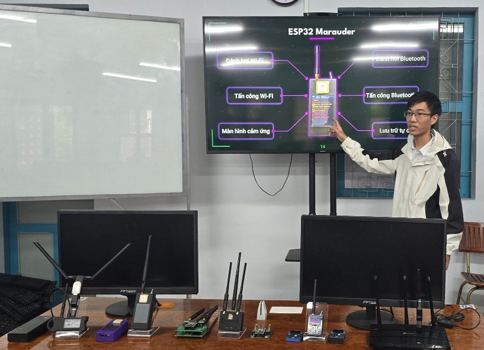

Information Security Laboratory
One of the two research laboratories run by the Faculty of Computer Networks and Communications.
Introduction
The Information Security Laboratory supports practical teaching and research for the Engineer in Information Security programme, covering applied cryptography, network security, web application security, attack and defence techniques, malware detection and analysis, and computer forensics.
Detailed content is being updated. Information about the equipment, projects and activities of the laboratory will be added soon.
Practical activities
